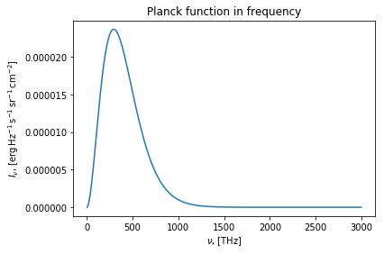
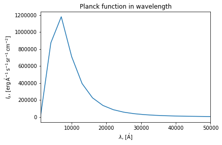
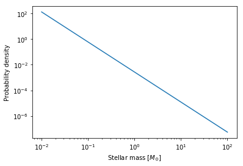

scipy.integrate¶Zach Pace, Lia Corrales
astropy and scientific
python contextastropy’s built-in black-body curvesastropy’s units interact with one another__call__ method worksmatplotlib figures using the
latex_inline formatterOOP, LaTeX, astrostatistics, matplotlib, modeling, units
In this tutorial, we will use the examples of the Planck function and
the stellar initial mass function (IMF) to illustrate how to integrate
numerically, using the trapezoidal approximation and Gaussian
quadrature. We will also explore making a custom class, an instance of
which is callable in the same way as a function. In addition, we will
encounter astropy’s built-in units, and get a first taste of how to
convert between them. Finally, we will use \(\LaTeX\) to make our
figure axis labels easy to read.
In[1]:
import numpy as np
from scipy import integrate
from astropy.modeling.blackbody import blackbody_lambda, blackbody_nu, BlackBody1D
from astropy import units as u, constants as c
import matplotlib.pyplot as plt
%matplotlib inline
The Planck function describes how a black-body radiates energy. We will explore how to find bolometric luminosity using the Planck function in both frequency and wavelength space.
Let’s say we have a black-body at 5000 Kelvin. We can find out the total intensity (bolometric) from this object, by integrating the Planck function. The simplest way to do this is by approximating the integral using the trapezoid rule. Let’s do this first using the frequency definition of the Planck function.
We’ll define a photon frequency grid, and evaluate the Planck function
at those frequencies. Those will be used to numerically integrate using
the trapezoidal rule. By multiplying a numpy array by an astropy
unit, we get a Quantity, which is effectively a combination of one
or more numbers and a unit.
Note on printing units:
Quantities and units can be printed to strings using the Format String
Syntax.
This demonstration uses the latex_inline format that is built in to
the astropy.units package. To see additional ways to format
quantities, see the Getting
Started
section of the astropy.units documentation pages.
In[2]:
nu = np.linspace(1., 3000., 1000) * u.THz
bb5000K_nu = blackbody_nu(in_x=nu, temperature=5000. * u.Kelvin)
plt.plot(nu, bb5000K_nu)
plt.xlabel(r'$\nu$, [{0:latex_inline}]'.format(nu.unit))
plt.ylabel(r'$I_{\nu}$, ' + '[{0:latex_inline}]'.format(bb5000K_nu.unit))
plt.title('Planck function in frequency')
plt.show()
Out[2]:
Here, we’ve used \(LaTeX\) markup to add nice-looking axis labels.
To do that, we enclose \(LaTeX\) markup text in dollar signs, within
a string r'\$ ... \$'. The r before the open-quote denotes that
the string is “raw,” and backslashes are treated literally. This is the
suggested format for axis label text that includes markup.
In[3]:
np.trapz(x=nu, y=bb5000K_nu).to('erg s-1 cm-2 sr-1')
Out[3]:
Now we can do something similar, but for a wavelength grid. We want to
integrate over an equivalent wavelength range to the frequency range we
did earlier. We can transform the maximum frequency into the
corresponding (minimum) wavelength by using the .to() method, with
the addition of an equivalency.
In[4]:
lam = np.linspace(nu.max().to(u.AA, equivalencies=u.spectral()),
nu.min().to(u.AA, equivalencies=u.spectral()), 1000)
bb5000K_lam = blackbody_lambda(in_x=lam, temperature=5000. * u.Kelvin)
plt.plot(lam, bb5000K_lam)
plt.xlim([1.0e3, 5.0e4])
plt.xlabel(r'$\lambda$, [{0:latex_inline}]'.format(lam.unit))
plt.ylabel(r'$I_{\lambda}$, ' + '[{0:latex_inline}]'.format(bb5000K_lam.unit))
plt.title('Planck function in wavelength')
plt.show()
Out[4]:
In[5]:
np.trapz(x=lam, y=bb5000K_lam).to('erg s-1 cm-2 sr-1')
Out[5]:
Notice this is within a couple percent of the answer we got in frequency space, despite our bad sampling at small wavelengths!
Many astropy functions use units and quantities directly. As you
gain confidence working with them, consider incorporating them into your
regular workflow. Read more
here about how to use
units.
As of Fall 2017, astropy does not explicitly support constructing
synthetic observations of models like black-body curves. The synphot
library does allow this.
You can use synphot to perform tasks like turning spectra into
visual magnitudes by convolving with a filter curve.
The stellar initial mass function tells us how many of each mass of
stars are formed. In particular, low-mass stars are much more abundant
than high-mass stars are. Let’s explore more of the functionality of
astropy using this concept.
People generally think of the IMF as a power-law probability density function. In other words, if you count the stars that have been born recently from a cloud of gas, their distribution of masses will follow the IMF. Let’s write a little class to help us keep track of that:
In[6]:
class PowerLawPDF(object):
def __init__(self, gamma, B=1.):
self.gamma = gamma
self.B = B
def __call__(self, x):
return x**self.gamma / self.B
__call__ method¶By defining the method __call__, we are telling the Python
interpreter that an instance of the class can be called like a function.
When called, an instance of this class, takes a single argument, x,
but it uses other attributes of the instance, like gamma and B.
Classes are more advanced data structures, which can help you keep track of functionality within your code that all works together. You can learn more about classes in this tutorial.
In this section, we’ll explore a method of numerical integration that
does not require having your sampling grid set-up already.
scipy.integrate.quad with reference
here
takes a function and both a lower and upper bound, and our
PowerLawPDF class takes care of this just fine.
Now we can use our new class to normalize our IMF given the mass bounds.
This amounts to normalizing a probability density function. We’ll use
Gaussian quadrature (quad) to find the integral. quad returns
the numerical value of the integral and its uncertainty. We only care
about the numerical value, so we’ll pack the uncertainty into _ (a
placeholder variable). We immediately throw the integral into our IMF
object and use it for normalizing!
To read more about generalized packing and unpacking in Python, look at the original proposal, PEP 448, which was accepted in 2015.
In[7]:
salpeter = PowerLawPDF(gamma=-2.35)
salpeter.B, _ = integrate.quad(salpeter, a=0.01, b=100.)
m_grid = np.logspace(-2., 2., 100)
plt.loglog(m_grid, salpeter(m_grid))
plt.xlabel(r'Stellar mass [$M_{\odot}$]')
plt.ylabel('Probability density')
plt.show()
Out[7]:
Let’s compare the number of M dwarf stars (mass less than 60% solar) created by the IMF, to the number of O stars (mass more than 15 times solar).
In[8]:
n_m, _ = integrate.quad(salpeter, a=.01, b=.6)
n_o, _ = integrate.quad(salpeter, a=15., b=100.)
print(n_m / n_o)
Out[8]:
20936.017868337385
There are almost 21000 as many low-mass stars born as there are high-mass stars!
Now let’s compute the relative total masses for all O stars and all M
stars born. To do this, weight the Salpeter IMF by mass (i.e., add an
extra factor of mass to the integral). To do this, we define a new
function that takes the old power-law IMF as one of its arguments. Since
this argument is unchanged throughout the integral, it is passed into
the tuple args within quad. It’s important that there is only
one argument that changes over the integral, and that it is the
first argument that the function being integrated accepts.
Mathematically, the integral for the M stars is
and it amounts to weighting the probability density function (the IMF) by mass. More generally, you find the value of some property \(\rho\) that depends on \(m\) by calculating
In[9]:
def IMF_m(m, imf):
return imf(m) * m
m_m, _ = integrate.quad(IMF_m, a=.01, b=.6, args=(salpeter, ))
m_o, _ = integrate.quad(IMF_m, a=15., b=100., args=(salpeter, ))
m_m / m_o
Out[9]:
20.29197629920483
So about 20 times as much mass is tied up in M stars as in O stars.
which you will use as \(\rho(m)\)
PowerLawPDF in a way
that allows both float and numpy.ndarray inputs.PowerLawPDF class to explicitly use astropy’s
units constructs.find a value of \(C\). How does this depend on the slope and endpoints of the IMF? * Take a look at Appendix B of Hunter & Elmegreen 2004, AJ, 128, 2170 * What effect does changing the power-law index or upper mass limit of the IMF have on the value of \(C\)? * Predict the effect on the value of \(C\) of using a different form of the IMF, like Kroupa or Chabrier (both are lighter on the low-mass end). If you’re not tired of IMFs yet, try defining a new class that implements a broken-power-law (Kroupa) or log-parabola (Chabrier) IMF. Perform the same calculations as above.